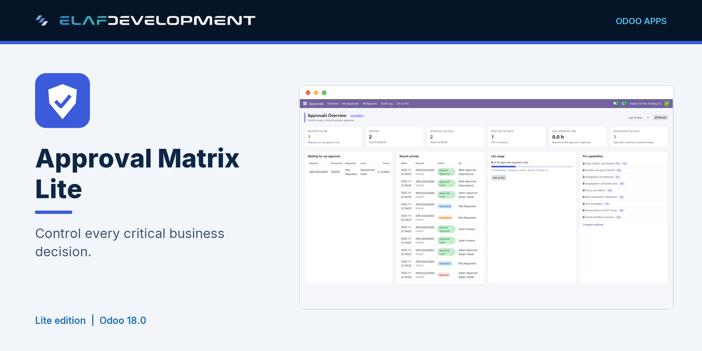
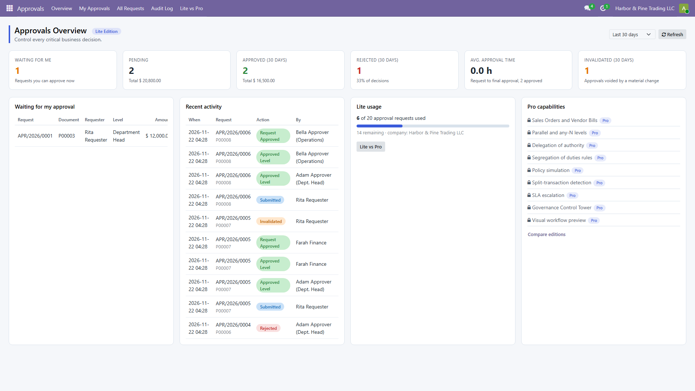
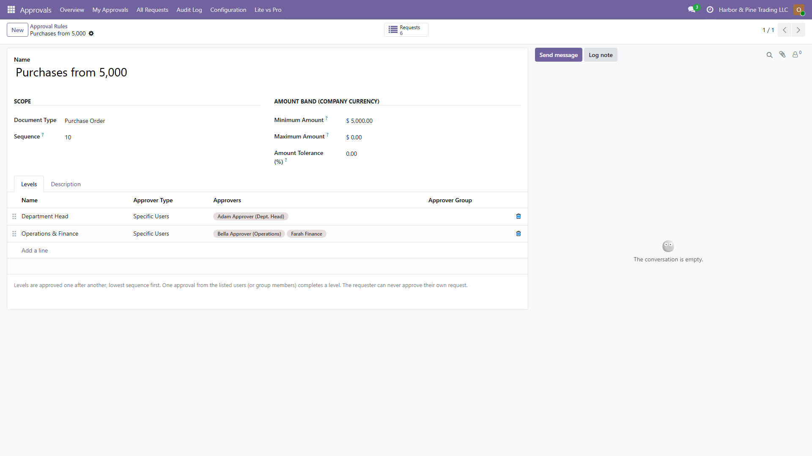
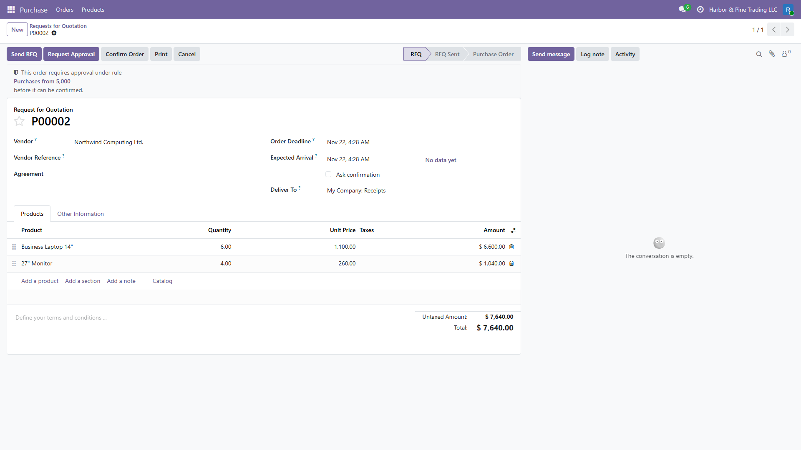
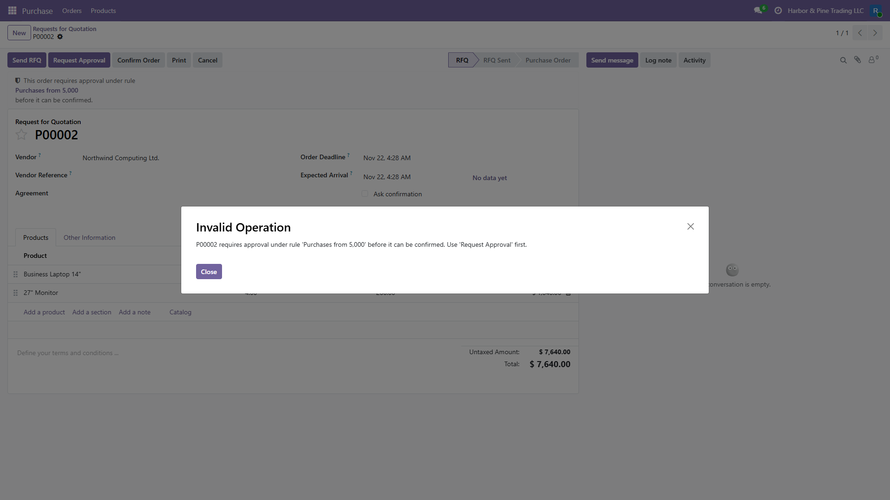
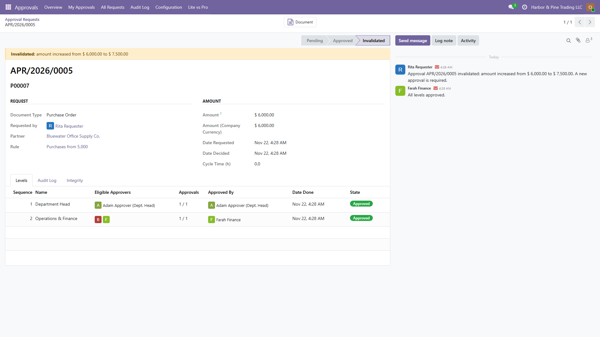
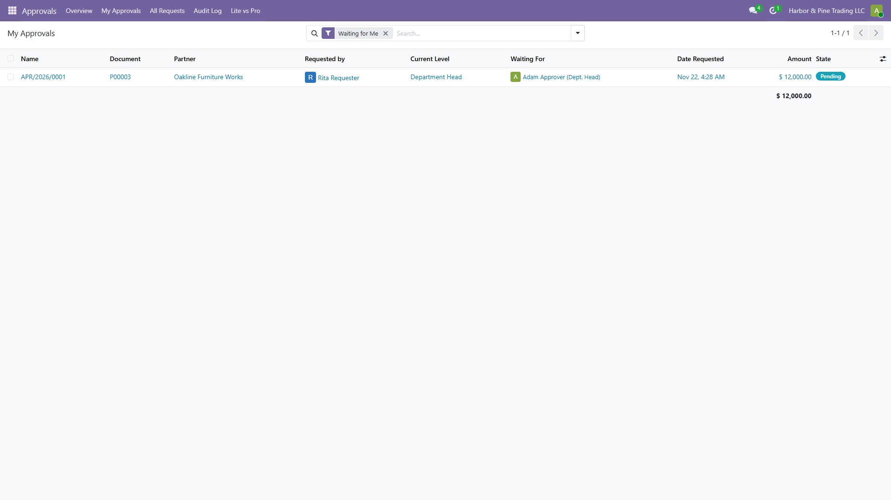
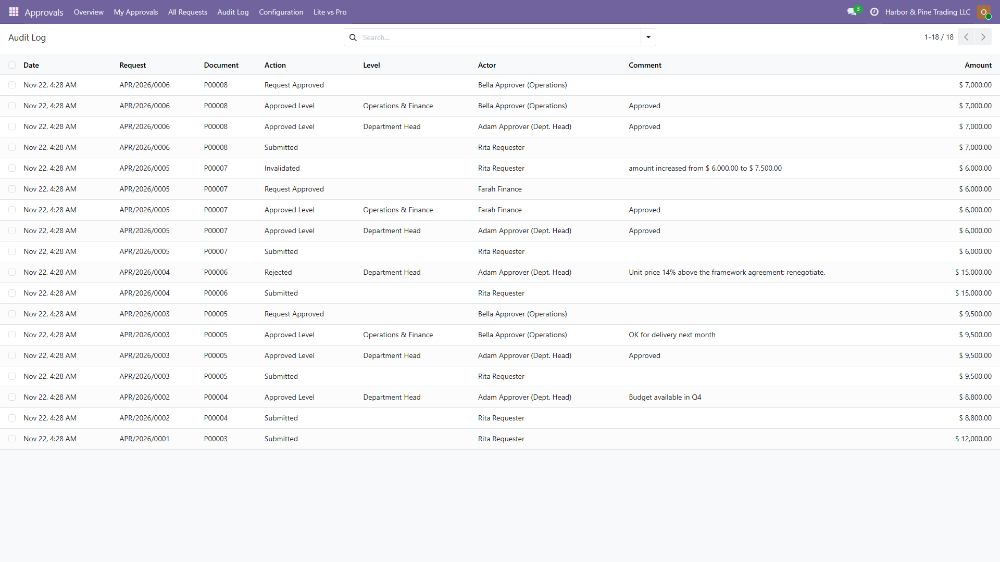
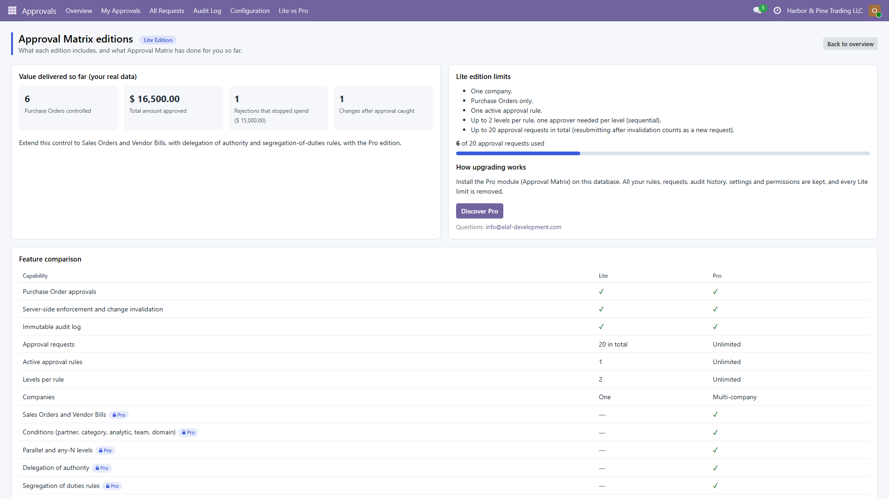

LITE EDITION
Amount-based approval rules for Purchase Orders, enforced on the server, with material-change invalidation and an audit log that cannot be edited.
Server-side enforcement Material-change invalidation Audit log English and Arabic1
Approval rules select the approvers from the Purchase Order total, converted to the company currency.
2
A Purchase Order that falls under a rule cannot be confirmed until its approval request is approved and still matches the order.
3
If the vendor, currency, lines, amount, delivery address or payment terms change before confirmation, the approval is invalidated and a new one is required. Once the order is confirmed, such changes are refused.

Approvals Overview: requests waiting for me, pending total, approved and rejected counts and average approval time
Amount band (minimum and maximum, company currency) per company. Each level uses specific users or a security group. Amount tolerance per rule (default 0%).
Request Approval from the Purchase Order. Approvers act from the order or from My Approvals. A reason is required to reject. Approvers get a to-do activity.
Confirming an order under a rule (button, write of the state, creation in a confirmed state, or an RPC call of these) is refused unless the request is approved and the order still matches it. The check runs on the order's values after the call, so fields changed in the same call are included.
A fingerprint of vendor, currency, company, lines, delivery address and payment terms is stored. Changes of these, or an amount increase beyond the tolerance, invalidate the approval. On a confirmed order the same changes are refused (cancel, reset to RFQ and request a new approval); receipts, vendor bills and lock/unlock are not affected.
Every request, decision, invalidation and cancellation is logged with user, time, level, amount and comment. Log entries cannot be edited or deleted.
Waiting for me, pending requests and amount, approved, rejected, average approval time and invalidations for 7, 30, 90 or 365 days, each opening the requests behind it.
A requester can never approve or reject their own request. Approvers must be active internal users with access to the order's company.
This free edition is fully functional within the limits below. Please review them before installing.

Approval rule with an amount band and two sequential levels

Request Approval on a Purchase Order, with the approval status banner

Confirmation is refused on the server while approval is missing

A change after approval invalidates the request

My Approvals: requests waiting for my decision

Audit log of every request, approval, rejection and invalidation

Lite vs Pro page with the Lite usage counter
Orders above a threshold need the purchasing manager, larger ones also the finance manager, in that order.
Internal audit reviews the log of who approved each order, at which amount, and which approvals were invalidated by later changes.
| Capability | Lite (free) | Pro |
|---|---|---|
| Purchase Order approval rules and server-side enforcement | ✓ | ✓ |
| Material-change invalidation, frozen confirmed orders and audit log | ✓ | ✓ |
| Rule conditions (partner, product category, analytic account, sales team, responsible user, domain) | — | ✓ |
| Delegation of authority (one hop) | — | ✓ |
| Segregation of duties rules and conflict list | — | ✓ |
| Policy simulation | — | ✓ |
| Transaction-splitting detection | — | ✓ |
| SLA per level with escalation | — | ✓ |
| Governance Control Tower dashboard | — | ✓ |
| Visual drag-and-drop workflow builder on rules | — | ✓ |
| Companies | One company per database (the first company that uses the app) | Multi-company |
| Document types | Purchase Orders only | Purchase Orders, Sales Orders, Vendor Bills, Customer Invoices and Customer Credit Notes |
| Active approval rules | One active approval rule | No cap |
| Levels per rule | Up to 2 levels per rule, one approval per level, sequential | No cap; sequential or parallel; any one, any N or all approvers |
| Approval requests | Up to 20 approval requests in total (counted when a request is submitted; resubmitting after invalidation counts as a new request; deleting requests does not give them back) | No cap |
| After the 20 requests are used | Approval enforcement stays on: new Purchase Orders that need approval cannot be confirmed. Pending requests can still be approved or rejected and approved orders can still be confirmed. A manager may archive the rule to stop requiring approvals. | Not applicable |
A Pro edition is available. It is installed on top of Lite and keeps all Lite data, settings and history.
| Supported Odoo versions | 18.0 |
|---|---|
| Other Odoo versions | Odoo 17.0 and 19.0 are distributed as separate packages. |
| Community / Enterprise | Odoo 18.0 Community Edition (tested). Enterprise Edition has not been tested. |
| Hosting | On-premise and Odoo.sh. Not available on Odoo Online, which does not run third-party Python modules. |
| Dependencies | Purchase, Discuss |
| License | LGPL-3 |
No. The requester is removed from the approvers and an explicit error is raised if they try.
Enforcement stays on. Existing requests can still be decided and approved orders confirmed. New orders under the rule cannot be confirmed; a manager may archive the rule, or install the Pro edition.
No. It is a local record in your database. There is no activation key and no remote check.
Confirmation through Odoo's normal methods is checked for every user, including code running as superuser. Direct SQL is not checked, and administrators can archive rules; see the Documentation tab.
The user and administrator guide is available in the Documentation tab of this listing.
Community support, best effort. Contact: info@elaf-development.com
Approval Matrix Lite 18.0.1.1.0, released 2026-11-22
Initial release for Odoo 18.0.